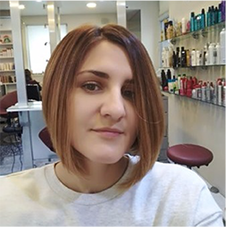

Самый простой вход в IT Профессия Frontend разработчика за 6 месяцев
Программа курса:
HTML\CSS
JAVASCRIPT
SOFTSKILLS
CAREER CONSULTING
IT ENGLISH

Олеся Бельмега
Закончила обучение в школе на курсе Front-end 8. Последние полгода в моей жизни были очень интенсивные. Программа курса очень плотная. Не все учащиеся выдерживают такой темп, но тот, у кого есть желание и стремление к знаниям всегда найдут в школе прекрасных менторов
и супер-дружескую атмосферу. До этого просмотрела много вариантов курсов в Киеве
и не нашла таких на столько разносторонних — тут не только оффлайн занятия по тех скиллс,
а еще и онлайн вебинары, мега-полезные занятия по софт скиллс и карьерный сервис.
Олеся Бельмега
Закончила обучение в школе на курсе Front-end 8. Последние полгода в моей жизни были очень интенсивные. Программа курса очень плотная. Не все учащиеся выдерживают такой темп, но тот, у кого есть желание и стремление к знаниям всегда найдут в школе прекрасных менторов и супер-дружескую атмосферу. До этого просмотрела много вариантов курсов в Киеве и не нашла таких на столько разносторонних — тут не только оффлайн занятия по тех скиллс, а еще и онлайн вебинары, мега-полезные занятия по софт скиллс и карьерный сервис.